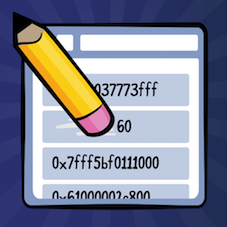
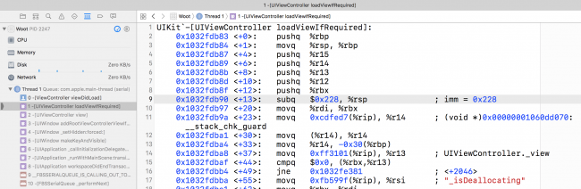
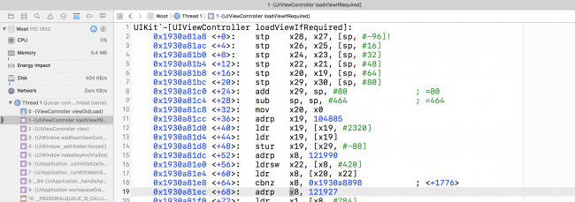
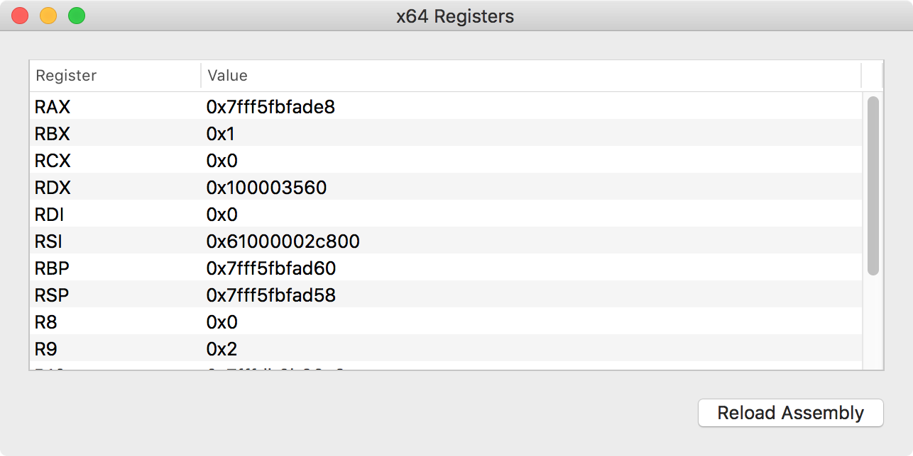
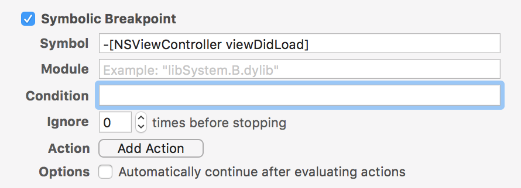
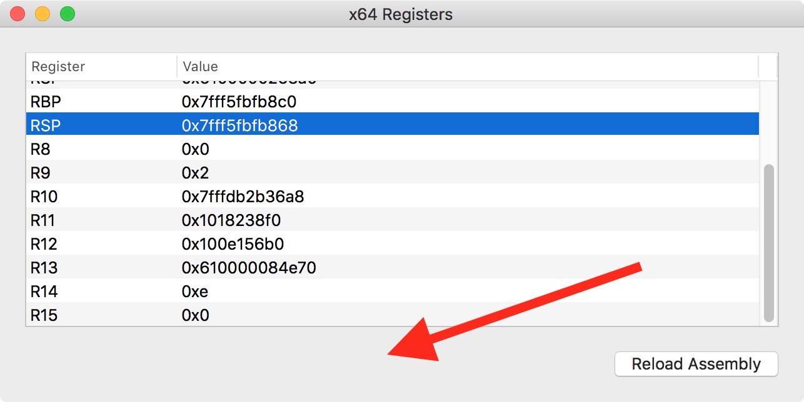
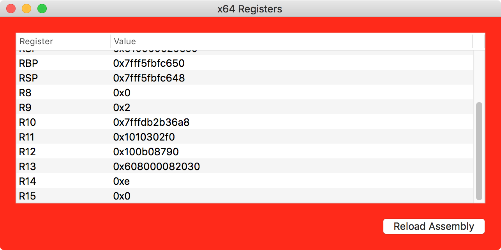
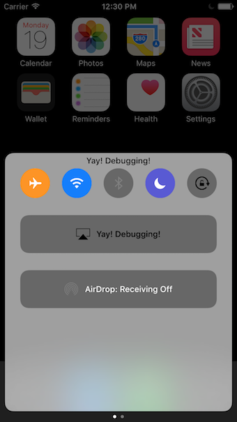
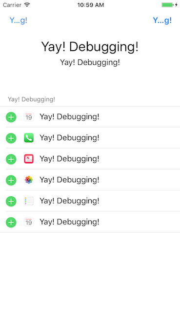

前言
本文翻译自Assembly Register Calling Convention Tutorial
序言

通过本教程，你会可以看到CPU使用的寄存器，并探索和修改传递给函数调用的参数。还将学习常见的苹果计算机架构以及如何在函数中使用寄存器。这就是所谓架构的调用约定。
了解汇编是如何工作的，以及特定架构调用约定是如何工作是一项极其重要的技能。它可以让你在没有源码的情况下，观察和修改传递给函数的参数。此外，因为源码存在不同或未知名称的变量情况，所以有时候更适合使用汇编。
比如说，假设你总想知道调用函数的第二个参数，不管参数的名称。汇编知识为你提供一个很好的基础层来操作和观察函数中的参数。
汇编
等等,汇编是什么？
你有没有停在一个没有源码的函数中，你会看到一系列内存地址，后面跟着一些吓人的短命令？你拥抱成球轻声在耳边私语告訴自己你从來不看这些东西？嗯…这些东西就是所谓的汇编！
这是一张Xcode里的回溯图片，它展示了模拟器里的汇编函数。

看上面的图片，这个汇编可以分成几个部分部分。每一行的汇编指令都包含一个操作码，它可以被认为是非常简单的计算机指令。
那么操作码看起来像什么样子呢？一个操作码执行计算机中的一个简单的任务的指令。比如，思考下面的汇编代码段：
1 | pushq %rbx |
在这个汇编块中，你会看到三个操作码，pushq，subq 和 movq。思考下这些操作码执行的动作。操作码后面是来源和目标的标签。这些就是操作码行为项。
在上一个例子中，有一系列寄存器 ，分别是 rbx ，rsp 和 rdi，在每个%后面的都称为寄存器。
另外，你可以找到16进制的常量如0x228。这个$后面的常量都为绝对数。
目前都不需要知道这些代码在做什么，因为你首先需要了解函数的寄存器和调用约定。
Note：在上面例子中，寄存器和常量之前有一堆
%和$。这是一种怎样的表达方式。然而，有两种主要方式展示汇编 。第一种是Intel汇编，第二种是AT&T汇编。
默认的，苹果反汇编工具库显示的是AT&T格式。正如上面例子中，虽然这是一种很好的格式，但可以肯定它有一点困难。
x86_64 vs ARM64
作为apple平台的开发者，当你学习汇编时，将会处理两种主要的汇编架构：x86_64 架构和 ARM64 架构，x86_64可能是你的macOS计算机架构，除非你运行在比较旧的电脑上。 x86_64是一种64-bit的架构，意味着每个地址可以容纳64个1和0。另外,老的苹果电脑使用32-bit架构，但苹果在2010年已经停止生产32位的计算机了。程序运行在MacOS下可以兼容64位，包括模拟器程序。也就是说，即使你是x86_64的MacOS,它仍然可以运行32位程序。
如果你对工作的硬件的架构表示任何的疑惑，可以在终端运行如下命令:
1 | uname -m |
ARM64 架构使用在移动设备如iPhone，控制电量消耗是最重要的。
ARM 强调电源保护，所以它减少了一些操作码，这助于在复杂汇编指令下的能源消耗减少。这对你来说是个好消息，因为在ARM架构上学习的指令更少。
下面是前面显示的相同方法的截图，这一次是跑在iPhone 7的ARM64位汇编下:

在他们的这么多设备中，但后来都移动到 64 位 ARM 处理器。32位设备几乎过时了，因为 Apple 已经通过各种 iOS 版本淘汰了他们。比如iPhone 4s 是32 位设备已经不支持 iOS 10。在32位 iPhone 系列中剩下的只有 iPhone 5 支持 iOS 10。
有意思的是，所有的 Apple 手表目前都是 32 位。这很可能是因为 32 位 ARM CPU 通常比它们的 64 位兄弟有更小的功率。这对手表很重要，因为电池很小。
x86_64 寄存器调用约定
你的CPU使用一组寄存器处理运行中的数据。这些是存储设备，就像你计算机里的内存。然而它们的位于CPU本身，非常接近CPU部分。所以CPU访问它们的时候非常快。
大多数指令涉及一个或多个寄存器，并执行操作。就像写寄存器到内存中，读内存的内容到寄存器，或在两个寄存器上执行算术操作(加减等等)。
在x64(这里开始，x64是x86_64的缩写)，有16个通用寄存器的机器用来操纵数据。
这些寄存器分别是 RAX，RBX，RCX，RDX，RDI，RSI，RSP 和 R8 到 R15。你现在可能并不清楚这些名字的含意，但你很快就会探索这些重要的寄存器。
当你在x64下调用函数，这种方式和使用寄存器，后面有非常具体的约定。这决定了函数的参数应该在哪里，在函数完成时函数的返回值在哪里。这很重要，因为用一个编译器编译的代码可以使用另一个编译器编译的代码。
举个例子，看一下下面这个 Object-C 代码：
1 | NSString *name = @"Zoltan"; |
它有四个参数传递到NSLog函数调用，有些变量是直接访问的，有一个参数是定义在本地变量中，然后引用参数在函数里。然而，通过汇编看代码时候，计算机不会关心变量的名称，它只关心内存中的地址。
下面的寄存器在x64汇编下作为函数调用时的参数。试着把这些内存提交他们到内存中，因为将来，你会经常使用这些内存。
- 第一个参数：
RDI - 第二个参数：
RSI - 第三个参数：
RDX - 第四个参数：
RCD - 第五个参数：
R8 - 第六个参数：
R9
如果超过六个参数，在函数里就会通过栈来访问额外的参数。
返回到上面的OC例子中，你可以重新定义寄存器就像下面的伪代码：
1 | RDI = @"Hello world, I am %@. I'm %d, and I live in %@."; |
当NSLog函数开始，这些寄存器会包含适当的值。如上图所示。
不管如何，当函数序言(function prologue)(准备栈和寄存器的函数开始部分)完成执行，这些寄存器上的值很有可能就会改变。通常在代码不需要它们的时候，汇编将会重写这些值，或简单的丢弃引用。
意味着当你离开函数时开始(通过stepping over,stepping in, or stepping out),你再也不能假设寄存器将保留你希望观察到的值，除非你实际看到汇编代码它正在做什么。
这个函数调用严重影响你的调试(断点)策略，你是否想自动化任何类型的中断去探索，你应该停止在函数调用之前，以便检查或修改参数，而不是真正到达汇编里。
Objective-C 和 寄存器
寄存器使用具体的调用约定。你可以使用相同的知识应用在其它语言中。
当 OC 执行方法内部，其实是通过一个具体的名为 objc_msgSend 的C函数来执行。这实际上函数有几种不同的类型，稍后再谈。这是消息转发的核心。第一个参数，objc_msgSend 引用发送消息的对象。然后是 selector，这是一个简单的char *指定的在对象上执行的函数名称。最后，objc_msgSend 采用可变参数在函数里。
让我们看个 iOS 环境上的实际例子：1
[UIApplication sharedApplication];
编译器会把代码转成如下伪代码:1
2id UIApplicationClass = [UIApplication class];
objc_msgSend(UIApplicationClass, "sharedApplication");
第一个参数引用是UIApplication类，紧接着是 sharedApplication 的selector。
告诉参数的一个简单方法是检查selector的冒号。每个冒号代表跟随一个参数。
这是另一个OC例子：
1 | NSString *helloWorldString = [@"Can't Sleep; " stringByAppendingString:@"Clowns will eat me"]; |
编译器会转成如下伪代码：
1 | NSString *helloWorldString; |
第一个参数是实例NSString(@"Can't Sleep; ")，紧接着是selector,最后是一个参数，也是NSString实例。
使用objc_msgSend知识，你可以使用x64寄存器帮助探索上下文，这是一种捷径。
理论到实际
你可以下载教程项目在这里
在这章，你将使用项目提供的教程资源bundle调用寄存器，打开项目在Xcode里，并运行它。

这是一个相当简单的应用程序，仅仅显示x64寄存器的内容。重要的是要注意，这个应用程序不能在任何给定的时刻显示寄存器的值，它只能显示在指定函数调用时寄存器的值。意味着当函数使用寄存器的值进行调用时，你不会看到太多寄存器变化的值。
现在你将会理解macOS应用程序功能行为的寄存器，创建一个NSViewController的viewDidLoad方法符号断点。推荐使用”NS”代替”UI”，因为你正在运行Cocoa程序。

构建然后返回应用程序，第一次断点停止，在LLDB控制台里输入：
1 | (lldb) register read |
在执行状态暂停，会显示主要寄存器的列表。无论如何，这些信息在多了。你应该有选择地输出寄存器和修复他们成为OC对象。
如果你重新调用，-[NSViewController viewDidLoad] 将会转换成如下汇编伪代码：
1 | RDI = UIViewControllerInstance |
记住x64调用约定，了解 objc_msgSend 的执行，你可以找到被加载具体的NSViewController实例。
在LLDB控制台输入：
1 | (lldb) po $rdi |
你将会得到输出：1
<Registers.ViewController: 0x6080000c13b0>
这将会输出隐藏在RDI寄存器中的NSViewController引用，你知道，对于函数这是第一个参数。
在LLDB里，重要的是$前缀是寄存器，所以LLDB知道你想要寄存器的值，而不是当前源码范围内的变量。是的，这与在反汇编视图中看的汇编不同！有点恼人，是吧？
Note：细心观察当你OC停止方法时，你从没看到
objc_msgSend在LLDB的回溯里，这是因为objc_msgSend这类函数执行是jmp,或是是跳转操作码的汇编指令。这个意思是objc_msgSend行动就像跳转函数，一但OC代码开始运行，所有有关objc_msgSend历史的栈都会被优化。这种优化称为尾部调用优化.
尝试输出RSI寄存器，希望包含被调用的selector，输出以下内容在LLDB中：1
(lldb) po $rsi
不幸的是，你获得了无效输出信息，看起来像这样：1
140735181830794
为什么是这样？
OC selector本质上是char *。这意味着，像所有的C类型，LLDB并不知道应用什么样式来展现数据。结果，你必须明确地转换成你想要的数据类型。
尝试转换成正确的类型：1
(lldb) po (char *)$rsi
现在你得到了你的预期：1
"viewDidLoad"
当然，你也可以输出Selector类型，产生同样的结果：1
(lldb) po (SEL)$rsi
现在，是时候探索OC方法的参数了，从你停止在viewDidLoad，你可以安全的假设NSView实例已经被加载了。下面我们来看一下NSView的父类NSResponder的一个比较有趣的方法mouseUp:。
在LLDB，创建一个NSResponder的mouseUp:断点，然后继续执行。如果你不记得怎么做，这里有个命令行你可能需要：1
2(lldb) b -[NSResponder mouseUp:]
(lldb) continue
现在，点击应用程序窗口，确认点击是NSScrollView的外面，否则你的点击会被NSScrollView捕获，-[NSResponder mouseUp:]断点将不会触发。

当用鼠标或触控板点击，LLDB会停止在mouseUp:断点。通过输出接下来的内容到控制台，来输出引用的NSResponder：1
(lldb) po $rdi
接着你会得到类似地输出：1
<NSView: 0x608000120140>
无论如何，这是一个有趣的selector，它包含冒号在里面，意味着他有参数可以探索！输出以下内容到LLDB控制台中：1
(lldb) po $rdx
你将获得有关NSEvent的描述：
1 | NSEvent: type=LMouseUp loc=(351.672,137.914) time=175929.4 flags=0 win=0x6100001e0400 winNum=8622 ctxt=0x0 evNum=10956 click=1 buttonNumber=0 pressure=0 deviceID:0x300000014400000 subtype=NSEventSubtypeTouch |
为什么称它为NSEvent?嗯，你可以看在线文档关于-[NSResponder mouseUp:]或者你可以简单使用OC来获得类型：
1 | (lldb) po [$rdx class] |
很酷，是吧？
有时候使用寄存器和断点是很有用的，以便获取已经内存中的对象引用。
举例来说，如果你想把前置的NSWindow变成红色，但你代码中没有此视图的引用，同时你也不想重新编译任何代码的改变？你可以简单的创建一个断点，从寄存器和操作实例对象来获得引用。你可以尝试着改变主窗口成红色。
Note：尽管每个
NSResponder实现了mouseDown:，NSWindow通过继承重载此方法。你可以不通过源码方式找出所有实现了mouseDown:方法的类，确定哪些继承了NSResponder的类。 举个输出所有实现了mouseDown:的Objective-C类的例子：image lookup -rn '\ mouseDown:
首先移除所有的之前的断点1
2(lldb) breakpoint delete
About to delete all breakpoints, do you want to do that?: [Y/n]
然后输出以下1
2(lldb) breakpoint set -o -S "-[NSWindow mouseDown:]"
(lldb) continue
这会设置一个断点，它只触发一次 —— 一次性断点。
点击应用程序，点击之后立即就会触发断点。然后输入以下在LLDB控制台：1
2(lldb) po [$rdi setBackgroundColor:[NSColor redColor]]
(lldb) continue
恢复断点，NSWindow就会变成红色！

Swift 和 寄存器
当在Swift探索寄存器的时候，相比较OC而言，你将会遇到两个方面的困难。
- 首先，寄存器
不能用在Swift调试上下文。意味着你无论想要获得什么数据，你得使用OC调试上下文输出寄存器。记住你可以使用expression -l objc -O --命令。幸运的是register read命令是可以在Swift环境中使用的。 - 第二，Swift相比较OC并不是动态语言。事实上，有时候最好假设Swift像C语言，除了有一个非常非常暴躁和专横的编译器。如果你有内存地址，你需要明确地转换成你期望的对象，否则，Swift调试环境并不知道解释内存地址。
也就是说，Swift也使用了相同的寄存器调用约定。无论如何，这是一个非常重要的不同点。当Swift调用函数，它不需要使用objc_msgSend,除非你标记方面为dynamic。意味着Swift调用函数，之前RSI寄存器关联的是selector，而实际上是函数的第二个参数。
理论足够了–是时候该行动了。
在Registers项目中，导航到ViewController.swift，然后增加相关的函数在类里：1
2
3
4
5
6
7func executeLotsOfArguments(one: Int, two: Int, three: Int,
four: Int, five: Int, six: Int,
seven: Int, eight: Int, nine: Int,
ten: Int) {
print("arguments are: \(one), \(two), \(three), \(four), \(five), \(six), \(seven), \(eight), \(nine), \(ten)"
)
}
现在，在 viewDidLoad 中，调用该函数与相应的参数：1
2
3
4
5
6override func viewDidLoad() {
super.viewDidLoad()
self.executeLotsOfArguments(one: 1, two: 2, three: 3, four: 4,
five: 5, six: 6, seven: 7,
eight: 8, nine: 9, ten: 10)
}
放置一个断点在 executeLotsOfArguments 函数调用的行上，然后调试器会停在最开始函数的地方。这很重要，否则在函数执行的时候寄存器将会被破坏。
然后移除之前的设置在-[NSViewController viewDidLoad]断点。
构建和运行app，然后等待executeLotsOfArguments断点让程序暂停。
再次，一种好的方式是开始调查输出寄存器列表，在LLDB中，输出以下：1
(lldb) register read -f d
这会输出寄存器并使用数字格式-f d显示。输出看起来是这样：1
2
3
4
5
6
7
8
9
10
11
12
13
14
15
16
17
18
19
20
21
22General Purpose Registers:
rax = 7
rbx = 9
rcx = 4
rdx = 3
rdi = 1
rsi = 2
rbp = 140734799801424
rsp = 140734799801264
r8 = 5
r9 = 6
r10 = 10
r11 = 8
r12 = 107202385676032
r13 = 106652628550688
r14 = 10
r15 = 4298620128 libswiftCore.dylib`swift_isaMask
rip = 4294972615 Registers`Registers.ViewController.viewDidLoad () -> () + 167 at ViewController.swift:16
rflags = 518
cs = 43
fs = 0
gs = 0
正如你看到的，寄存器跟随x64位的调用约定。RDI，RSI，RDX，RCX，R8 和 R9 持有了你的六位参数。
你还可能注意到其他参数存储在其它寄存器中。虽然这是真的，但它只是代码的剩余部分，它为其余参数设置到栈上。记住，第六个参数之后的都在栈上。
RAX，保存返回值的寄存器
等等–还有更多！到目前为止，你已经了解如何在函数中调用六个寄存器，但是有关返回值的呢？
幸运的是，只有一个函数返回值的寄存器：RAX。返回到 executeLotsOfArguments 然后修改函数返回为 String ,像这样：
1 | func executeLotsOfArguments(one: Int, two: Int, three: Int, |
在 viewDidLoad，修改函数调用接收并忽略字符串的值。
1 | override func viewDidLoad() { |
创建断点在 executeLotsOfArguments 的任意地方。再次构建和运行。然后在函数里等待执行到暂停。下一步，输出以下到LLDB控制台：1
(lldb) finish
它会完成执行当前函数并再次暂停调试器。此刻，函数返回值应该已经在 RAX。输出以下内容在LLDB中：1
(lldb) register read rax
你会得到相似的结果:1
rax = 0x0000000100003760 "Mom, what happened to the cat?"
找到了！你返回的值！
了解返回值在 RAX 中是非常重要的，你将会在下个段落写函数的调试脚本。
通过寄存器改变返回值
为了巩固对寄存器的理解，你将修改已编译应用程序中的寄存器。
关闭Xcode和Registers项目。打开终端窗口然后运行iPhone 7模拟器，像下面这样输入1
2
3xcrun simctl list
```
你会得到一个很长的设备列表，找到最后一个iOS版本的模拟器。在下面找到iPhone 7设备。看起来像是这样：
iPhone 7 (269B10E1-15BE-40B4-AD24-B6EED125BC28) (Shutdown)1
这个UUID你将会在后面用到。使用下面命令打开模拟器并替换你的UUID：
open /Applications/Xcode.app/Contents/Developer/Applications/Simulator.app –args -CurrentDeviceUDID 269B10E1-15BE-40B4-AD24-B6EED125BC281
确认模拟器已经被运行，并到主屏幕中。你可以通过快捷键``Command + Shift + H``到主屏幕。一旦模拟器运行完成。在终端窗口后面写上如下命令设置到SpringBoard程序：
lldb -n Spring Board1
2
3这个把正在iOS模拟器中运行的SpringBoard实例，绑定到LLDB上！SpringBoard是一个在iOS上控制主屏幕的应用程序。
输入如下命令在LLDB：
(lldb) p/x @”Yay! Debugging”1
2
你会获得相似的输出：
(__NSCFString *) $3 = 0x0000618000644080 @”Yay! Debugging!”1
记录下这个新创建的NSString实例的内存引用地址，你马上就会用到它。现在创建一个断点在``UILabel``的``setText:``方法：
(lldb) b -[UILabel setText:]1
下一步输入以下：
(lldb) breakpoint command add1
LLDB变成支持多行的编辑模式。这个命令让你增加额外的命令当你想命中断点时来执行。输入以下，并替换内存地址，像这样：
po $rdx = 0x0000618000644080
continue
DONE
2
3
恢复调试使用``continue``命令：
(lldb) continue`
尝试探索SpringBoard模拟器app，会看到文本内容发生改变。划动手指从下往上拉出控制中心。然后观察改变：

尝试浏览其它新弹出的地方，因为这可能会使视图被延迟加载，导致断点行动被命中。

虽然这可能看起来很酷的编程技术，提供了一种在有限的寄存器和汇编知识情况下，没有源码就可以产生巨大的变化。 从调试观点来看这很有用，你可以快速在视觉上进行验证，当-[UILabel setText:]在SpringBoard应用执行和运行在断点条件下去找精确的代码行去设置指定UILabel的文本。
继续这个想法，有些 UILabel 实例的文本并没有改变也告诉你一些事情。比如说，UIButton的文本并没有改变。也许 UILabel 的 setText:在早期就被调用过？或者可能开发SpringBoard程序的开发者选择使用setAttributtedText:来代替？或者他们使用还未公开给第三方开发者的私有函数？
正如你看到的，使用和操作寄存器可以提供给你很多的观察力，去了解应用程序的函数。
何去何从？
好了！这篇文章很长，不是吗？坐下来休息一下喝杯饮料；你获得了它。 你可以下载完整的项目从这篇教程的这里。
你学习了什么？
- 架构定义调用约定了哪个指令哪位参数到函数和它返回的值被保存。
- 在Objective-C中，
RDI寄存器用来引用调用的对象，RSI是selector,RDX是首个参数等等。 - 在Swift中，RDI 是第一个参数，RSI第 二个参数，然后等等，只要Swift方法不使用动态分发(dynamic dispatch)。
-RAX寄存器为函数返回值使用，不管你是用在用OC还是Swift。 - 当使用
$打印寄存器的时候，确认当前环境是OC。
你可以用寄存器做很多事情。尝试探索没有源码的app；这很有趣，为解决调试问题打下了良好的基础。
尝试在iOS模拟器和地图的UIViewControllers一样出现使用汇编、智能的断点和断点命令。